ОБЩИЕ СВЕДЕНИЯ
Принцип ПИД-регуляторов
Для позиционных регуляторов процесс регулирования представляет собой колебания вокруг заданной точки. Естественно это связано с «релейной» статической характеристикой Y(U-X).
РЕГУЛЯТОРЫ С ПИД-ЗАКОНОМ РЕГУЛИРОВАНИЯ
На рисунке показана линейная статическая Y(U-X) характеристика.
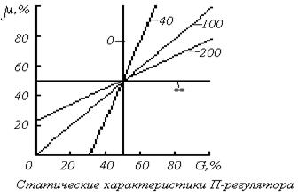
Если входная Е = U-X (невязка) и выходная величина сигнала регулятора Y связаны простым соотношением Y=K·(U-X), такой регулятор называется пропорциональным. Естественно что линейный участок статической характеристики не бесконечен, он ограничен максимально возможным значением выходной величины: Ymax. Например, при регулировании температуры воды в баке: Х - температура воды; U - заданное значение требуемой температуры; Y - выходной сигнал регулятора (мощность нагревателя, Вт); Ymax, например, 750 Вт. Если при максимальной мощности величина Е = 75оС, то К = 0,1оС/Вт.
При очень большом коэффициенте усиления К пропорциональный регулятор вырождается в позиционный с нулевой зоной нечувствительности. При меньшем значении К регулирование происходит без колебаний
(см.рис. 2).
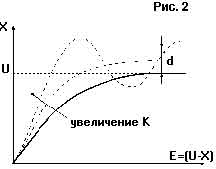
Процесс регулирования
П-регулятором при скачкообразном изменении
задания с 0 до U (разгонная кривая)
Отметим, что значение регулируемой величины Х никогда не достигнет задания U. Образуется, так называемая статическая ошибка: d (см. рис. 2). Действительно, при приближении температуры воды Х к заданию U постепенно уменьшается подаваемая мощность Y, т.к. Y=К·(U-X). Но теплота, рассеиваемая в окружающую среду, увеличивается, и равновесие наступит при Y = K·d и d не достигнет 0, т.к. если d будет равно 0, то и Y=0 и Х=0. Таким образом на выходе регулятора устанавливается некоторое значение Y=K·d , которое приводит регулируемую величину Х в состояние отличное от задания. Чем больше К, тем меньше d. Однако при достаточно большом К САР и объект могут перейти в автоколебания. Этот предельный коэффициент усиления определяется соотношением наклона разгонной кривой R и транспортным запаздыванием to объекта: Kmax = 2/(R·to) (см. рис. 2).
В ряде случаев, при малом транспортном запаздывании, статическая ошибка находится в необходимых пределах, поэтому П-регуляторы находят некоторое применение. Для устранения статической ошибки d при формировании выходной величины Y вводят интегральную составляющую отклонения от задания:
Y = K·(U-X) + In(U-X)/Ti ,
где Тi - постоянная интегрирования.
Таким образом, чем больше время, в течение которого величина Х меньше задания, тем больше интегральная составляющая, тем больше выходной сигнал. Регулятор с таким законом формирования выходного сигнала называется пропорционально-интегральным ПИ-регулятором.
В установившемся режиме (d=0) в интеграторе содержится величина In/Т, которая равна выходной мощности, требуемой для получения необходимой Х. Таким образом интегратор как бы находит статический коэффициент передачи объекта. Для достижения установившегося режима в интеграторе требуется достаточно большее время. Поэтому ПИ-регулятор можно применять в случае, когда и внешние воздействия достаточно медленные.
В случае резких изменений внешних и внутренних факторов (например, налили холодной воды в бак или резко изменили задание) ПИ-регулятору требуется время для компенсации этих изменений.
Для ускорения реакции САР на внешние воздействия и изменения в задании в регулятор вводят дифференциальную составляющую D(U-X):
Y = K·(U-X) + In(U-X)/Ti+Тd·D(U-X),
где Тd - постоянная дифференцирования.
Чем быстрее растет Е, тем больше D(U-X). Регулятор с таким законом управления называется ПИД-регулятором. Подобрав для конкретного объекта К ,Тi и Td можно оптимизировать качество работы регулятора: уменьшить время выхода на задание, снизить влияние внешних возмущений, уменьшить отклонение от задания. При очень большом Тi регулятор очень медленно выводит объект на задание. При малом Тi происходит перерегулирование, т.е. регулируемый параметр Х проскакивает задание (рис.7), а затем сходится к нему. Ниже описаны методики настройки регуляторов, т.е. расчет коэффициентов в зависимости от динамических свойств объекта. Без настройки ПИ-регулятор может обладать худшим качеством работы, чем даже Т-регулятор. Приведем передаточные функции П-, ПИ- и ПИД-регуляторов, принятые в теории автоматического управления.
Пропорциональный регулятор – П:
y = К(u -x), т.е. в обратную связь заводится отклонение от уставки.
Пропорционально-Интегральный – ПИ:
y = (u-x)( Kp + /pTi) , т.е. в обратную связь заводится также интеграл от отклонения, это позволяет избежать статической ошибки.
Пропорционально-Интегрально- Дифференциальный – ПИД:
y = (u-x)·( Kp + 1/pTi + p·Td ), т.е. в обратную связь заводится также производная отклонения, это позволяет улучшить динамические характеристики регулятора.
Блок схема ПИД регулятора показана на рис. 3.
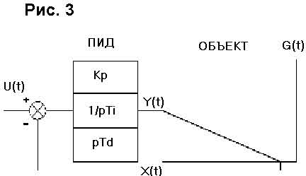
Структурная схема ПИД-регулятора
Величина рассогласования Е подвергается диференцированию и интегрированию. Выходная вели-чина - Y ПИД-регулятора формируется суммированием с весовыми коэффициентами дифференциальной, пропорциональной и интегральной составляющих. По наличию этих составляющих регуляторы и имеют сокращенное название П, ПИ, ПИД.
Существуют модификации ПИД-регуляторов:
а) при наличии интегратора на выходе или в исполнительном механизме (например сервопривод задвижки водяного отопления) ПД-регулятор как бы превращается в ПИ-регулятор, а вычислительная схема ПИД-регулятора требует двойного дифференцирования;
б) дифференциальная составляющая часто вычисляется только по Х, что дает более плавный выход на режим при изменении задания U.
Настройка регуляторов При применении ПИД- регуляторов для каждого конкретного объекта необходимо настраивать от одного до трех коэффициентов. Возможны САР с автоматизированной настройкой. Для типовых регуляторов известны простейшие аналитические и табличные методы настройки (например две методики Цидлера).
Настройка по реакции на входной скачок Алгоритм настройки:
- на вход САР подается новое задание (уставка) – нагреватель включается на максимальную мощность, и по переходному процессу X(t) определяются t0, R, tи (см. рис. 4):
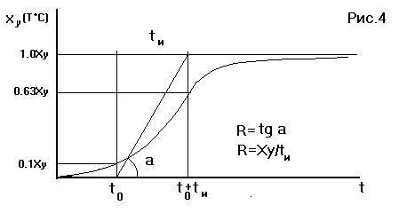
Разгонная кривая для объекта с транспортным запаздыванием:
to - время транспортного запаздывания;
tи - постоянная времени (время согласования) определяется инерционностью объекта;
Xy - установившееся значение;
R - наклон разгонной кривой dX/dt (макс. скорость изменения Х)
- вычисляются коэффициенты настройки согласно следующим примерным соотношениям:
для П-регулятора К= 1/R·t0
для ПД-регулятора К= 1/R·t0, Td=0.25·t0
для ПИ-регулятора К= 0.8/R·t0, Ti= 3·t0
для ПИД-регулятора К= 1.2/R·t0, Ti= 2·t0, Td=0.4·t0.
Не обязательно выводить объект на максимально возможную величину Х. Однако, следует иметь в виду, что слишком маленький скачок не позволяет определить R с достаточно высокой точностью.
Настройка по методу максимального коэффициента усиления Этот способ применяется, если допустим колебательный процесс, при котором значения регулируемой величины значительно выходят за пределы задания U.
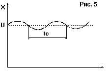
К настройке по методу максимального
коэффициента усиления
Алгоритм настройки:
- определяется предельный коэффициент Кмах усиления при котором САР и объект переходят в колебательный режим, т.е. без интегральной и дифференциальной части (Тd=0, Тi=Ґ). Вначале К=0, затем он увеличивается до тех пор, пока САР и объект переходит в колебательный режим. САР соответствует схеме П-регулятора (см.рис.2).
- определяется период колебаний tc (см. рис. 5);
- вычисляются коэффициенты настройки согласно следующим примерным соотношениям:
для П-регулятора К= 0.5·Kмах
для ПД-регулятора К= 0.5·Кмах, Td=0.05·tc
для ПИ-регулятора К= 0.45·Кмах, Ti= 0.8·tс
для ПИД -регулятора К= 0.6·Кмах, Ti= 0.5·tс, Td=0.12·tc.
Настройка по процессу двухпозиционного регулирования по релейному закону
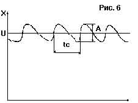
К настройке по процессу двухпозиционного
регулирования
Эта методика удобна, если применялся Т-регулятор, который затем заменяется на ПИД- регулятор:
- система переводится в режим двухпозиционного регулирования по релейному закону (см. рис. 6);
определяется амплитуда - А и период колебаний tс;
- вычисляются коэффициенты настройки согласно следующим примерным соотношениям:
для П-регулятора К = 0.45/А
для ПД-регулятора К = 0.45/А, Td=0.05·tc
для ПИ-регулятора К = 0.4/А, Ti= 0.8·tc
для ПИД-регулятора К = 0.55/А, Ti= 0.5·tс, Td=0.12·tc.
Если объект не меняет структуру и свои параметры, то системы с ПИД-регуляторами обеспечивают необходимое качество регулирования при больших внешних возмущающих воздействиях и помехах, то есть близкое к 0 рассогласование Е (см. рис. 7). Как правило, точно согласовать параметры регулятора и объекта сразу не удается. Если Ti меньше оптимального в два раза, процесс регулирования может перейти в колебательный режим. Если Ti существенно больше оптимального, то регулятор медленно выходит на новый режим и слабо реагирует на быстрые возмущения - G. Таким образом, как правило необходима дополнительная подстройка. На рис. 7 показано влияние неоптимальных настроек ПИД-регуляторов на вид переходной функции (реакции САР и объекта на единичный скачок в задании).
|
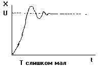 |
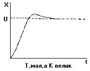 |
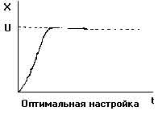 |
|
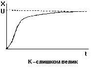 |
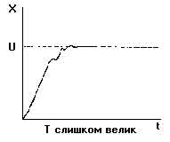 |
|
|
Рис. 7. К уточнению |
коэффициентов настройки |
Для большинства объектов ПИД-регулирование обеспечивает лучшие показатели чем П и ПИ. Для объектов с малым транспортныи запаздыванием: to < tи/3 ПИД-регуляторы обеспечивают удовлетворительное качество регулирования: достаточное малое время выхода на режим и невысокую чувствительность к возмущениям. Однако, для объектов с t0>0.5·tи, даже ПИД-регуляторы не могут обеспечить достаточно хорошего качества регулирования. В крайнем случае можно применить ПИД-регулятор с коэффициентом Td=0, но для таких сложных объектов лучшие качественные показатели обеспечиваются системами автоматического управления (САУ) с моделью.
Составлено по материалам Аркадия ЕРКОВА, Алексея ХОРОШАВЦЕВА